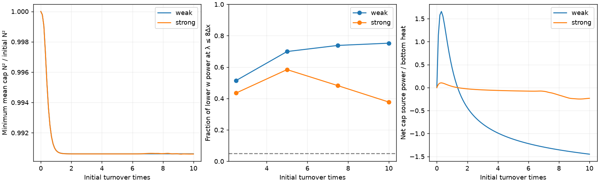

Both short dry anelastic pilots completed t=1000 (10 initial eddy turnover times). The cap is retained, but convection remains insufficiently resolved and maintaining the stronger-stratification cap requires large opposing thermal sources. The pair is not ready for the planned long physical comparison.
Completed pilots; no long continuation. The minimum mean N² in the cap core retains about 99% of its initial value in both cases. At the endpoint, approximately 75% (weak deformation) and 38% (strong deformation) of lower-layer vertical-velocity power lies at wavelengths ≤8 horizontal cells. The respective spectral peaks are at about 6.2 and 9.1 cells. These fail the stated short-scale-power criterion; long integration alone would not fix that limitation.
| Initial L/LD | GPU allocation, including checks | Production integration | Outcome |
|---|---|---|---|
| 0.5 · weak deformation | 8 min 17 s | 4.8 min | Cap retained; resolution screening fails |
| 2 · strong deformation | 13 min 19 s | 7.4 min | Cap retained; resolution screening fails |
Weak/strong refers to deformation, not heating or stratification. The weak-deformation case has the larger N². Bottom heat and initial velocities are matched. The second case's simple 100-turnover runtime projection exceeds the original one-hour screen; this is a cost criterion, not a numerical failure.
Each movie shows unfiltered vorticity above absolute passive tracer at three saved heights near z/H=0.3, 0.7 and 0.85. Actual heights, time, tracer mean and RMS variation appear in each frame. All 101 saved states, no interpolation. Fixed scales are shared between cases and across time; the centered asinh tracer scale resolves concentration gradients without framewise normalization. Positive ζ/f is cyclonic.
The fixed top cooling slab was replaced by relaxation of the horizontal-mean potential-temperature profile toward its initial cap profile, with relaxation time20 and a smooth mask across z/H=0.55–0.65. This does not directly damp horizontal temperature anomalies or impose vortex sign. It represents an externally maintained mean stratification, not radiative equilibrium. The controller may heat or cool; the signed source accounting is included below and in the diagnostics.
Same 256×256×80 grid, 8×8×1 domain, vertical f=0.1, initial eddy Ro=0.1, eddy Re=100, Pr=1, WENO9, ordinary viscosity/diffusivity, depth-spanning mixed-sign eddies and bottom heating. Horizontally periodic, impermeable stress-free lids; no beta or imposed jet. Full-driver CPU/GPU restart and output checks passed. Uniform heated-column tests through t=1000 retained 99.1% of cap stratification. Their near-zero mass flux required an absolute roundoff check; the original 3D relative constraint tolerance was unchanged.

| Case | Cumulative net cap heat / bottom heat | Final cap heating power / bottom power | Final cap cooling power / bottom power (negative) |
|---|---|---|---|
| weak | -0.812 | 8.029 | -9.477 |
| strong | -0.082 | 0.505 | -0.738 |
Cap enthalpy-equivalent source accounting, not an exact total-energy closure. The large opposing heating and cooling contributions redistribute heat to maintain the mean cap; their cancellation must not be mistaken for negligible thermal control.
Convection becomes active late in these pilots. The stable-layer mean state is controlled, but resolving convective transport and its effect on vortices remains outstanding. These movies do not demonstrate a preferred LSV sign or inverse energy transfer. The initial field already contains large eddies. A targeted resolution comparison is the next useful check; no finer or longer simulation was launched with this publication.
Simulations2320449/2320450; assessment2320451; rendering2327963, all on Unity. Measured results and movie verification · Weak-case diagnostics · Strong-case diagnostics · Simulation source